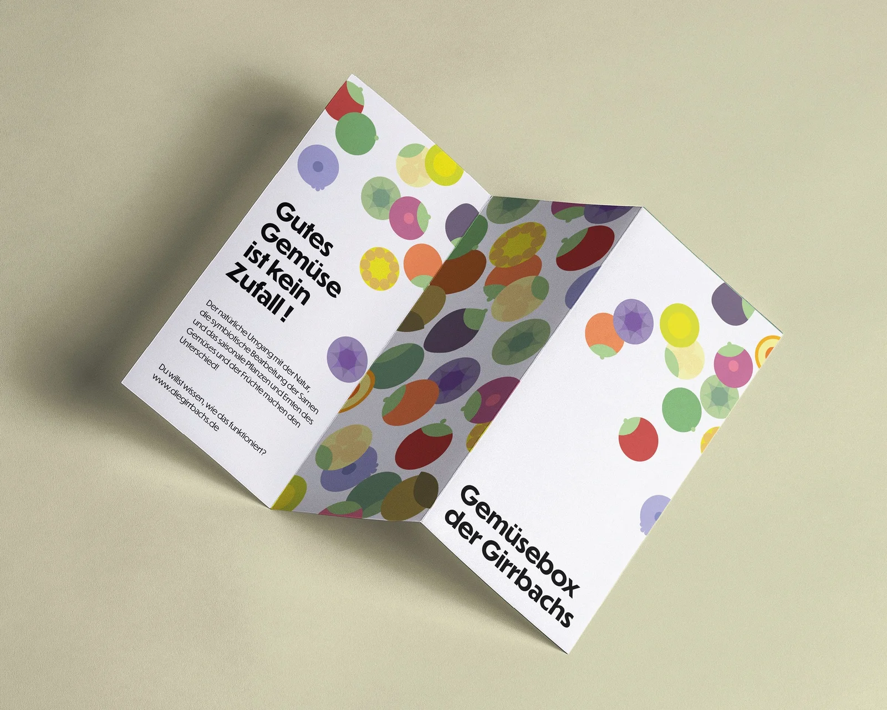
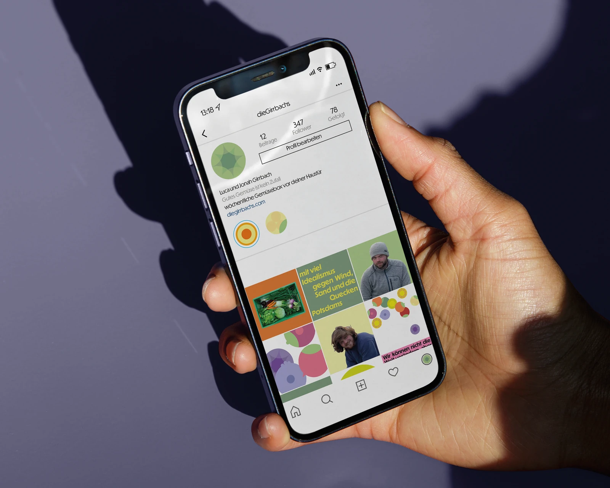
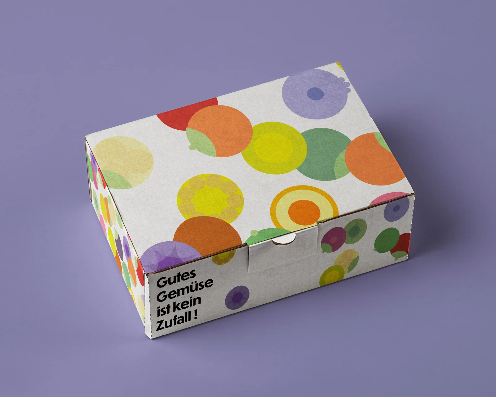

Neues, modernes, respektvolles und umweltbewusstes Arbeiten mit der Natur, in Kombination mit schier
endlosem Wissen über Symbiose, Böden und Nachhaltigkeit sind die Indizien für kontrollierten Anbau.
Diese Regelhaftigkeit und Kontrolle möchte ich mit Hilfe der Form eines Kreises symbolisieren, das
„Spießige“ aber mit veganer Buntheit brechen.


